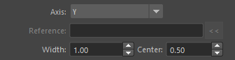
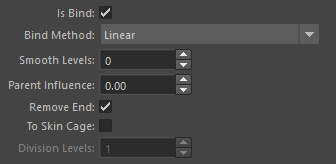
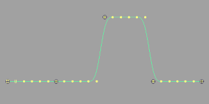
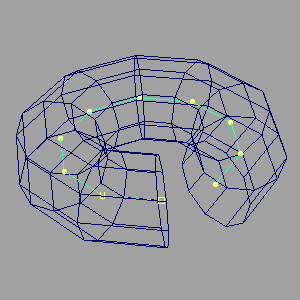
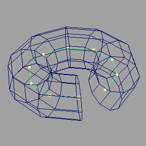

Curve/Surface Creator
概要
選択したトランスフォームノードに対して、NURBS カーブ ( 以下、カーブ ) を作成し、そのカーブを基準に ロフトされた NURBS サーフェス ( サーフェース ) やメッシュを作成します。
また、ジョイントノードを選択していた場合は、オプションにより作成されたオブジェクトをスムースバインドすることができます。
起動方法
専用のメニューか、以下のコマンドでツールを起動します。
import faketools.tools.rig.curveSurface_creator_ui
faketools.tools.rig.curveSurface_creator_ui.show_ui()
使用方法
- トランスフォームノードを選択します ( 複数選択可能 )。
Select TypeをSelected( 選択したノード間に作成 ) かHierarchy( 選択したノードの階層構造毎に作成 ) のどちらかを選択します。Object Typeから作成するオブジェクトの種類を選択します。- グレーアウトされていないオプションを設定します。
Createボタンを押すことでカーブやサーフェスが作成されます。
オプション
主なオプションは、以下四つの項目に分かれます。
- 基本オプション
- カーブオプション
- ロフトサーフェースオプション
- バインドオプション
基本オプション

- Select Type
- カーブを作成するトランスフォームノードの選択方法を指定します。
Selected: 選択したノード間に作成します。Hierarchy: 選択したノードの階層構造毎に作成します。
- カーブを作成するトランスフォームノードの選択方法を指定します。
- Object Type
- 作成するオブジェクトの種類を指定します。
Curve: カーブを作成します。Surface: カーブを基準にロフトされたサーフェスを作成します。Mesh: カーブを基準にロフトされたメッシュを作成します。
- 作成するオブジェクトの種類を指定します。
カーブオプション
カーブの作成時に設定するオプションです。

- Degree
- 作成するカーブの次数を指定します。
- Center
- カーブが選択したノードの中心に作成されるようにします。
- Close
- カーブが閉じた形状になるようにします。
- Reverse
- カーブの作成方向を逆にします。
- Divisions
- カーブの分割数を指定します。
- Skip
- 選択したノードをこの値分スキップしてカーブを作成します。
ロフトサーフェースオプション
サーフェース及びメッシュの作成時に設定するオプションです。objectType
が Surface か Mesh
の場合のみ有効です。

- Axis
- サーフェースの作成方向を指定します。
X: 選択したノードの X 軸方向にサーフェースを作成します。Y: 選択したノードの Y 軸方向にサーフェースを作成します。Z: 選択したノードの Z 軸方向にサーフェースを作成します。Normal: 作成されるカーブの法線方向にサーフェースを作成します。Binormal: 作成されるカーブの従法線方向にサーフェースを作成します。Surface Normal: 参照サーフェスの法線方向にサーフェースを作成します（参照オブジェクトに NURBS サーフェスを指定する必要があります）。Surface Binormal: 参照サーフェスの従法線方向にサーフェースを作成します（参照オブジェクトに NURBS サーフェスを指定する必要があります）。Mesh Normal: 参照メッシュの法線方向にサーフェースを作成します（参照オブジェクトにメッシュを指定する必要があります）。Mesh Binormal: 参照メッシュの従法線方向にサーフェースを作成します（参照オブジェクトにメッシュを指定する必要があります）。
- サーフェースの作成方向を指定します。
- Reference Object
Surface Normal,Surface Binormal,Mesh Normal,Mesh Binormalを選択した場合に使用する参照オブジェクトを指定します。- 参照オブジェクトを選択し、
<<ボタンを押すことで設定できます。 Surface Normal/Surface Binormalの場合は、NURBS サーフェスを指定してください。Mesh Normal/Mesh Binormalの場合は、メッシュを指定してください。- サーフェースを作成する各ノードの位置から、参照オブジェクト上の最も近い点を探し、その位置の法線方向を使用します。
- Width
- サーフェースの幅を指定します。
- Width Center
- サーフェースの作成方向に対して、この値を中心にサーフェースを作成します。0.5 でサーフェースはプラスマイナス同じ幅になります。
- 例えば、Width が 10.0 で Width Center が 0.5 の場合、サーフェースは -5.0 から 5.0 までの幅になります。
バインドオプション
オブジェクトを作成後、そのオブジェクトを選択したノードでスムースバインドする際のオプションです。
選択したノードがジョイントノードである場合のみ有効です。

- Is Bind
- このチェックボックスがオンの時、作成されたオブジェクトを選択したノードでスムースバインドします。
- Bind Method
- スムースバインドのメソッドを指定します。
Linear: リニアウェイトでバインドします。
Ease: イーズインアウトウェイトでバインドします。
Step: ステップウェイトでバインドします。
- スムースバインドのメソッドを指定します。
- Smooth Levels
Bind Methodでのウエイト設定後、ウエイトをスムースにするレベルを指定します。
- Parent Influences
- この値が 0 の時は、選択したノードを基準にバインドします。
- 1 以上の値を指定した場合、選択したノードの親ノードをこの値分遡り、そのノードを基準にバインドします。
- Remove End
closeオプションがオフかつこのオプションがオンの時、選択したノードの最後のノードをバインドから除外します。
- To Skin Cage
- Skin Weights to Mesh
ツールと同様に、スムースバインド後のオブジェクトをスキンケージに変換します。
objectTypeがSurfaceの時のみ有効です。
- Skin Weights to Mesh
ツールと同様に、スムースバインド後のオブジェクトをスキンケージに変換します。
- Division Levels
To Skin Cageがオンの時、スキンケージの分割数を指定します。
Edit メニュー
カーブを作成/編集する際に使用するコマンドが格納されています。
Move CVs Positions
- 閉じられたカーブの CV をカーブに対して１つ選択して実行します。
- CV 番号が 0 の位置を選択した CV の位置に移動します。


Create Curve to Vertices
- Vertex ( メッシュの頂点 ) を選択し ( 複数選択可 ) 実行します。
- 選択した Vertex を基準にカーブを作成します。
 

Create Curve on SurfaceU V
- サーフェースを選択し ( 複数選択可 ) 実行します。
- 選択したサーフェース上の各 UV 値の中心にカーブを作成します。